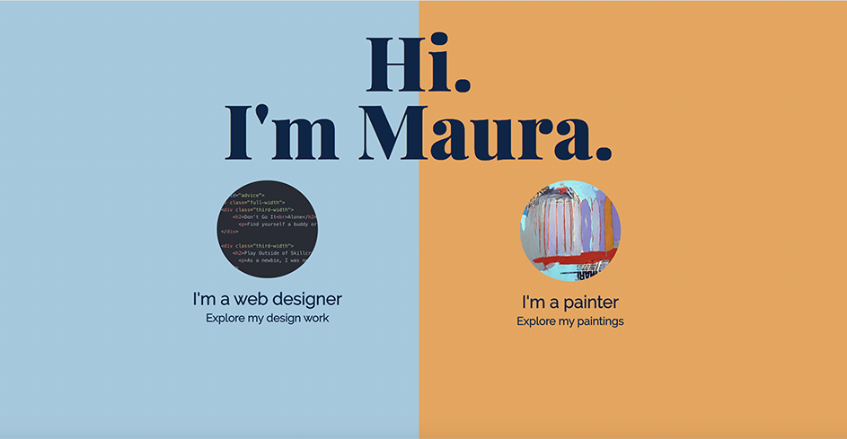

Art and Design Portfolio
Case Study
The Challenge
This static webpage is a little unconventional, in that it is a portfolio site that encompasses both fine art paintings, and web design projects.
This is my own site, and I know that’s a fine line to walk, as many people would suggest creating two different sites, one for my paintings and one for my web design work. However, I’m a person who likes to make things, whether they’re paintings or websites, and that doesn’t feel like two bifurcated entities to me. It feels entirely right that it all comes out of one pair of eyes and hands, and one heart! I think a well-constructed site can support all of it.
I decided that I want to keep both parts of “my brand” together in one place, all under my name, and solve the problem of knitting this together in a visual way, while also making it clear to viewers that there are two “tracks” laid side by side. It’s important to me that viewers have a smooth experience navigating the site, so that they end up where they want to be, while also having the option of exploring the parallel track, should they desire to do that.
The Solution
My solution was to not pull any punches: I very clearly split the screen down the middle. The complementary colors (orange and blue) are opposite each other on the color wheel, so they clearly mark their own territory, yet they’re not fully saturated, so they coexist in a comfortable way.
I minimized the amount of information on this page - just a few words on each color field, along with a sample of my work - so it’s easy to understand. There is a link on each side, which takes the viewer to their desired “track”. Once on that track, navigation will make clear how to explore the other track, if desired.